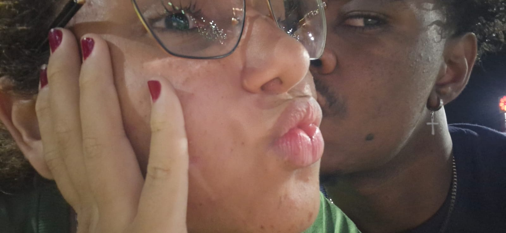
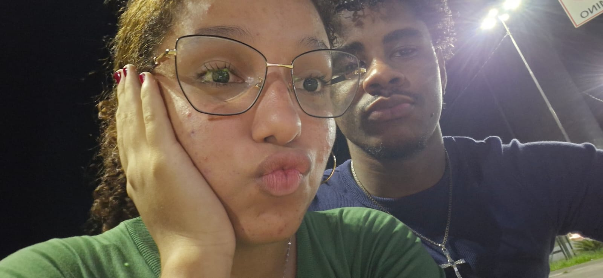
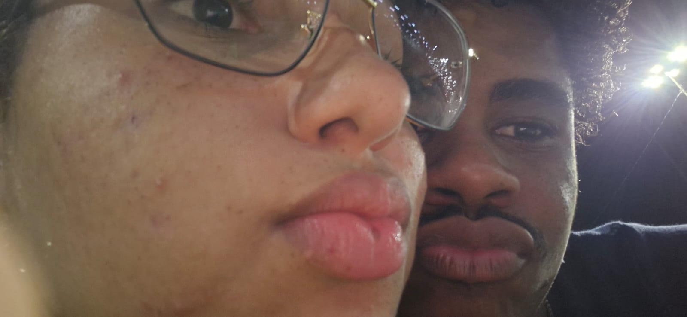
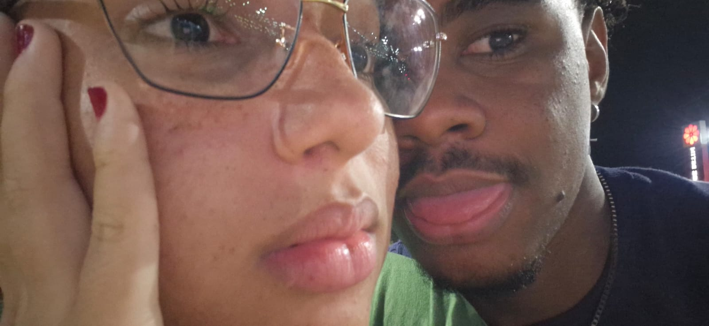

para voce
Antes de tudo, uma carta.
Eu queria que essa historia comecasse assim: devagar, com cuidado, como quem abre uma carta guardada perto do coracao.
capitulo 1
Desde 23 de julho
Desde 23 de julho, as 19:12, esse tempo virou parte da nossa historia.
Esse e o tempo que estamos construindo, segundo por segundo.
capitulo 2
O que eu sinto por voce
Eu gosto do jeito que voce chegou sem forcar nada e, mesmo assim, ficou. Gosto da paz que sua presenca me traz, da vontade que eu tenho de te cuidar e da alegria simples de poder falar com voce.
capitulo 3
O que eu fui guardando
Cada palavra aqui pode ter uma foto. Quando ela tocar em um topico, aparece uma lembranca visual desse sentimento.

capitulo 4
Lembrancas marcantes
Aqui entram os momentos que mais ficaram no coracao: conversas, prints, lugares, dias especificos, qualquer detalhe que conte a historia de voces dois.



capitulo 5
As coisas que ela gosta
Amar tambem e reparar: no que ela gosta de comer, nas musicas que ela repete, no jeito que ela sorri, nos lugares que deixam ela feliz.


capitulo 7
Sua musica
Essa musica fica aqui como uma lembranca nossa. A capa pode ser uma foto de voces dois, como se fosse o album da historia.
versiculos
"Acima de tudo, porem, revistam-se do amor, que e o elo perfeito." Colossenses 3:14
"O amor e paciente, o amor e bondoso." 1 Corintios 13:4
"Assim, permanecem agora estes tres: a fe, a esperanca e o amor." 1 Corintios 13:13
"Acima de tudo, porem, revistam-se do amor, que e o elo perfeito." Colossenses 3:14
capitulo 8
O futuro que eu espero
Eu imagino um futuro com conversa sincera, oracao, risadas, planos simples e uma vontade constante de cuidar bem de voce.
capitulo 9
Mais pedacinhos de nos
Algumas paginas nao precisam explicar tudo. As fotos falam, e o coracao entende.
final
Eu prometo cuidar do que a gente construir.
Prometo estar presente, rir contigo, aprender contigo, respeitar seus tempos e fazer do nosso amor uma casa bonita de morar.